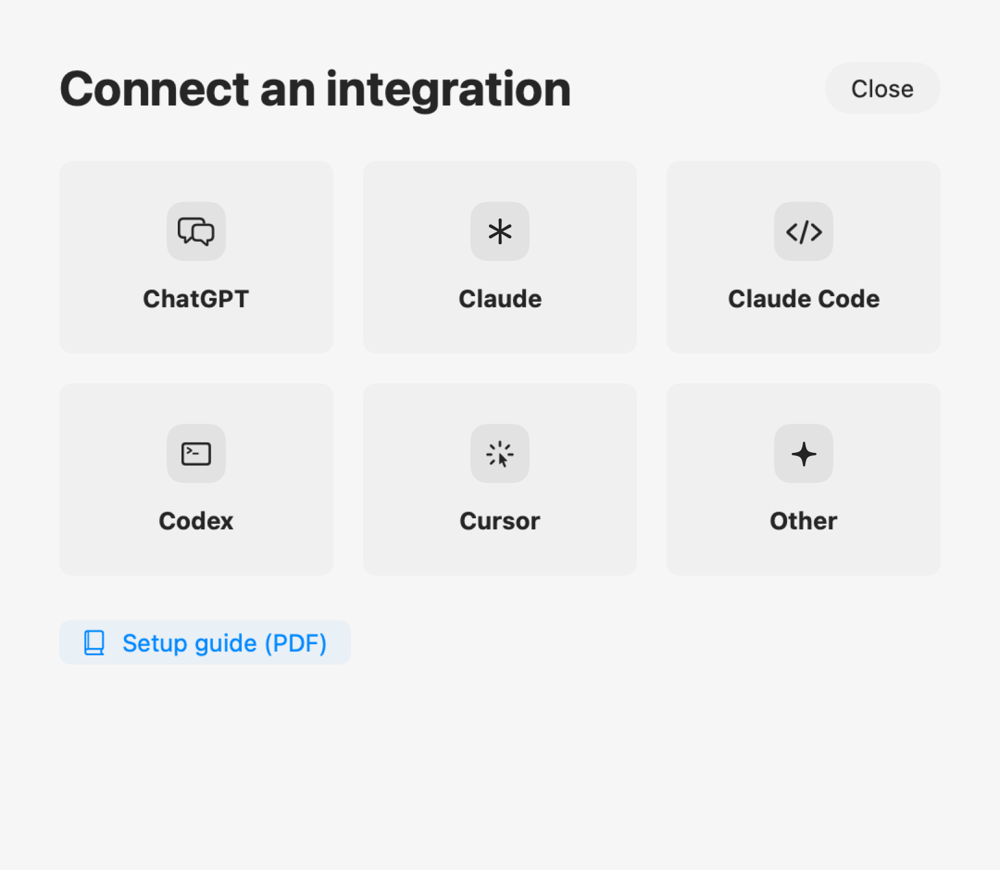
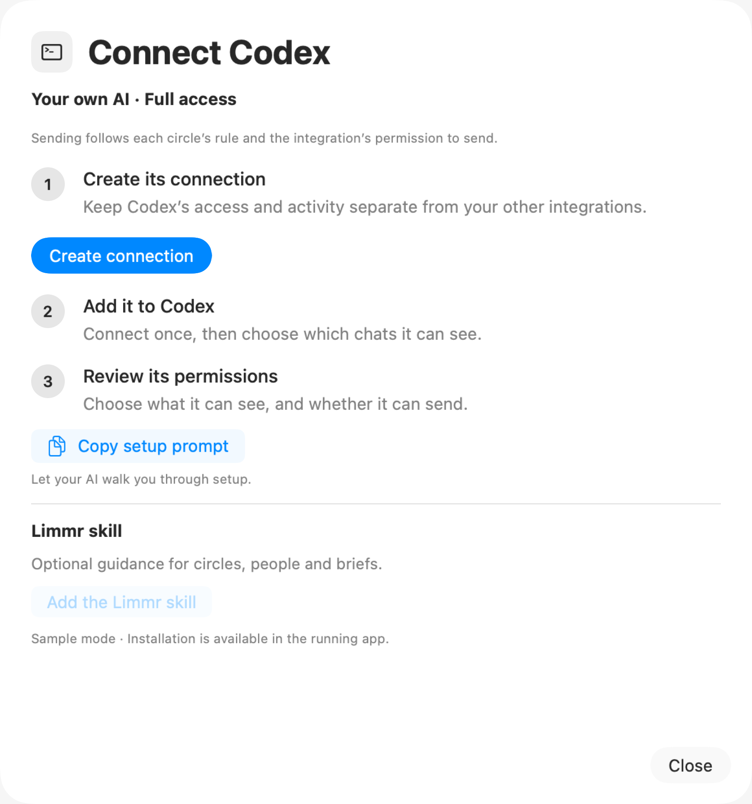
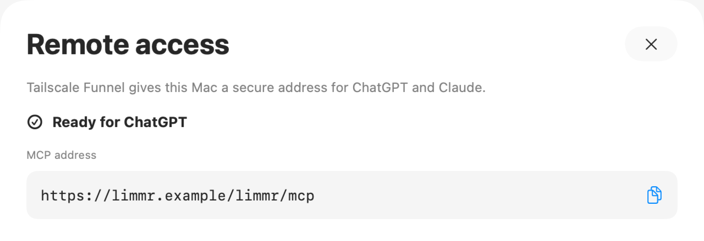
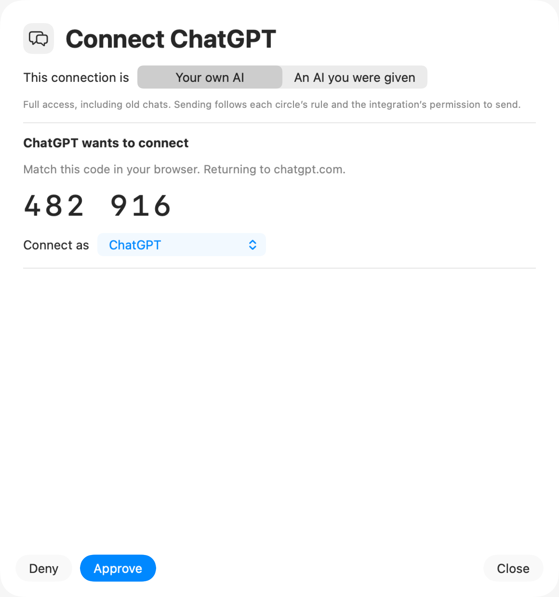
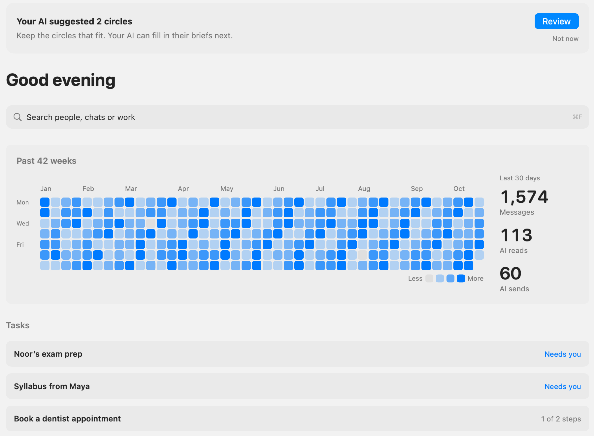

Start here
A calm first run, from installing Limmr to asking your AI its first question.
Start with the demo. Explore invented chats before linking WhatsApp or giving an AI access.
Choose one connection. Local clients work on this Mac. Hosted clients use optional remote access.
Check it worked. Ask for whoami, then look at Home and Activity.
For Claude Code, Codex, Cursor, ChatGPT and claude.ai.
Keep this guide beside your Mac. The screenshots use sample data only.
The map
Limmr is the meeting point. You choose what each AI can see.
Messages and session keys stay on your Mac. An AI receives the data you permit and may process it at its provider. Remote access exposes the connector, not your database files.
01 / Install
Download the DMG from this repository’s GitHub Releases page when a beta is available.
Drag Limmr to Applications.
Open it from Applications after copying.
Allow the self-signed beta.
If blocked, right-click the app → Open. If needed, try opening it once, then use System Settings → Privacy & Security → Open Anyway. Confirm the macOS prompts.
Allow its helper.
When asked, allow Limmr under System Settings → General → Login Items. Return to Limmr after approving.
Try demo/sample mode.
Explore Home, People and Activity using invented chats. No phone pairing or AI credentials are needed.
Limmr uses an unofficial WhatsApp library. Compatibility can change, and an account may be disconnected or restricted. Decide whether you want to link your account after trying the demo.
Use the release linked from the repository. Do not disable Gatekeeper to install a beta. If no DMG has been released yet, wait for the beta rather than treating source code as a finished installer.
02 / First run
On iPhone, Linked devices is under WhatsApp Settings. On Android, check the overflow menu. Keep your phone nearby and allow the first history sync to finish.
QR expired? Start a fresh code in Limmr. Logged out later? Link again. Your linked-device session and message store live on this Mac.
03 / Connect

Use a local connection and its own agent credential. No remote access is needed.
Enable Remote access first. A hosted AI cannot reach your Mac through localhost.
Use a separate profile for each AI or purpose. Review its visibility, duration and send permissions. You can reopen this PDF from this picker, Settings → Integrations or Help.
04 / Local clients

Claude Code: use Connect or let the prompt register the server and install its skill.
Codex: use Connect or let the prompt back up and merge its MCP configuration and install the skill.
Cursor: copy the manual JSON, or let the prompt merge mcp.json and add the bundled instructions.
Keep the approved prompt private. Reconnect your client after configuration changes. Skills guide the AI; they do not grant access. After copying: “Copied. Paste it into <client>.”
05 / Hosted clients

Sign in to Tailscale.
Install it if needed. Open Limmr → Settings → Remote access → Set up remote access.
Choose Tailscale Funnel.
Let Limmr check available routes and configure the connection. Discovery can take 10–15 minutes.
Wait for Ready for ChatGPT.
Copy the MCP address ending in /mcp. Both ChatGPT and claude.ai use this route.
Copy the public MCP address ending in /mcp. Keep this Mac awake and the helper running. Do not expose the local control port or reset unrelated tunnels.
06 / Pair

ChatGPT: open settings and add a custom connector/app with the copied MCP address and OAuth. This repo documents Apps → Advanced → Developer mode, then Create app; labels and availability need checking for your account.
claude.ai: open settings and add a custom connector. This repo documents Settings → Connectors → Add custom connector. Sign in if prompted, approve in Limmr, then return to your AI.
Review access, duration and Let it set things up. This enables people suggestions and briefs; remote sending/media stay off. Copy setup prompt walks you through these steps without a local token.
07 / Verify

Your own AI may add qualifying circles with Undo. Review membership and uncertain people details. Turn off setup/write permissions if you want read-only access.
Reference / Fixes
Start in Limmr’s Health view. Check the connection you actually chose.
Keep the Mac awake and helper running. Local client: same Mac and loopback address. Hosted client: public HTTPS MCP address, never localhost.
The address may be reachable, but authentication has not succeeded. Check enabled state, access expiry and this agent’s credential. Hosted clients need completed OAuth and matching approval. Reconnect after revocation.
Allow discovery 10–15 minutes. Check Tailscale sign-in and Funnel availability; use the wizard’s Retry. Keep unrelated routes intact.
Open Limmr, allow its Login Items entry and follow Health’s guidance. If needed, share redacted diagnostics rather than tokens or databases.
Start linking again and scan a fresh code from Linked devices. Wait for sync.
Reopen Limmr → Settings → Remote access → Review code. Retry an expired request. After approval, use “I’ve approved it, continue” in the browser if needed.
Reference / Privacy
Give each AI the smallest access you want it to have.
Read and search permitted chats. With write permissions, suggest circles and people details and save briefs. Use whoami and Activity to check what actually happened.
Global Hidden chats stay invisible to every AI, including searches and counts. Circles, duration and revocation limit future calls. They cannot recall data already received by an AI provider.
Leave sending off for a read-only beta. If enabled, circle rules apply: Never blocks sends; Confirm in chat requires confirmation or an own AI’s explicit instruction from you; Free may send immediately. Requested reviews wait on Home. Limmr cannot prove a person clicked the AI client’s confirmation button.
Limmr is not endorsed by WhatsApp or Meta. An unofficial library can stop working or lead to account restrictions. Demo mode lets you explore without linking an account.
Keep nearby: In the repository: docs/SETUP.md · docs/CONNECTING.md · docs/SECURITY.md
Hosted-client menu labels and account availability are based on the repository’s existing documentation and still need a live release check.